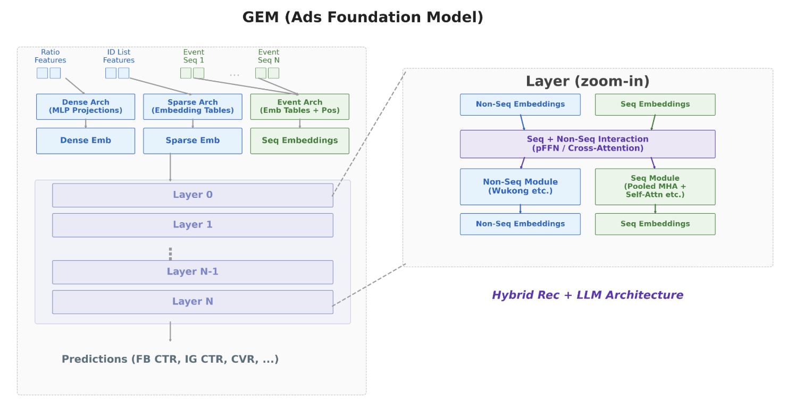
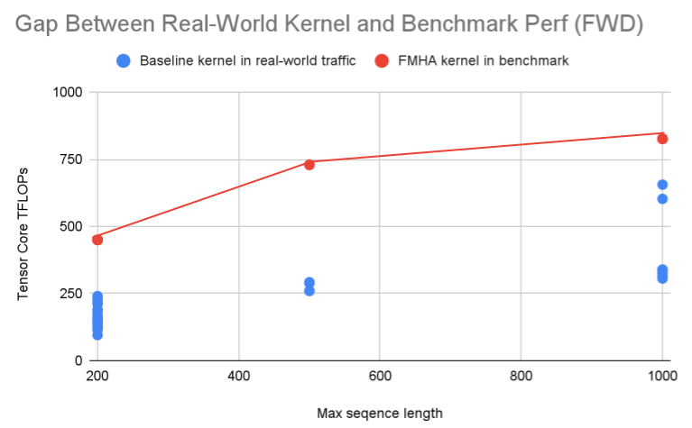
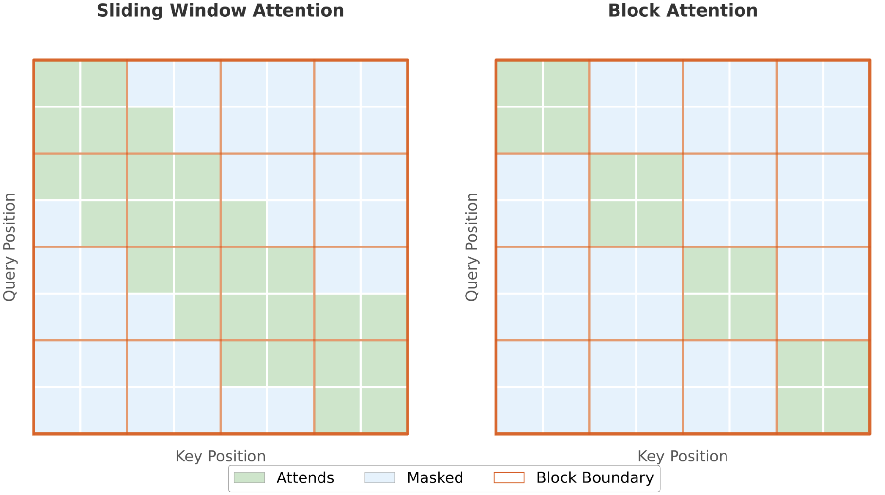
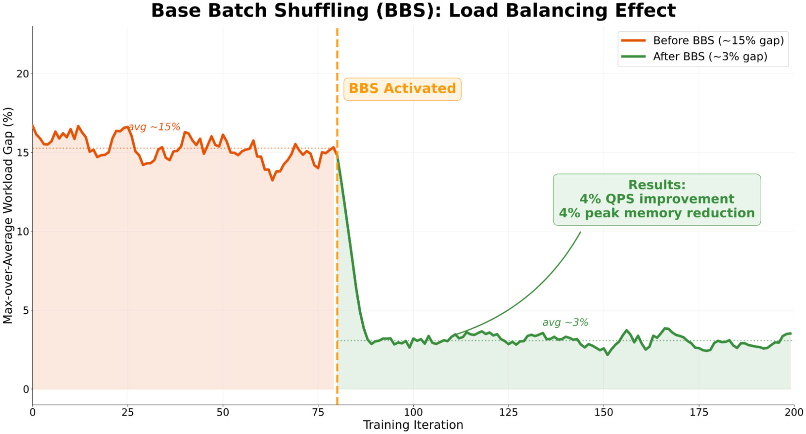

目录 · 11 节
1它到底在解决什么问题？2先看全景：一个乘法，两组手段3单卡效率：为推荐数据重写 attention kernel4长序列为什么改成分块 attention？58 位精度：难点在量化开销和数值稳定6扩展效率：并行按网络层级分，通信不占 SM7显存和负载均衡8关键数字汇总9我认为它的局限10一个推荐团队可以怎么试11一句话结论和评价做大规模推荐模型训练的团队值得读，尤其是序列越来越长、GPU 越来越多，但训练效率没有跟着涨的团队。它回答的不是“模型怎么设计”，而是一个更基础的工程问题：推荐数据长短不一、参数一半是巨大的稀疏表，LLM 那套为定长文本优化的训练栈为什么用不好，又该怎么改。核心思想一句话：把端到端效率拆成“单卡算得多满”乘以“扩到几千卡后还剩多少”，前者靠专门为推荐写的 attention kernel 和 8 位精度，后者靠按网络层级分配的并行方式、不占计算单元的通信和按序列长度配平的数据分批。结果是 12 个月里训练总算力扩大 4 倍，同时端到端 MFU 翻倍到 20% 到 25%。这是 Meta 的工程博客，不是论文，没有消融表，各项收益的基线也不统一，所以读它更适合拿方法清单，而不是精确的收益账。
它到底在解决什么问题？
GEM（Generative Ads Recommendation Model，生成式广告推荐模型）是 Meta 广告推荐的基础模型，服务 Facebook 和 Instagram 的广告排序。它有万亿级的稀疏 embedding 参数和十亿级的稠密参数。输入分两类：用户行为历史这类序列特征，以及用户位置、广告创意表示这类非序列特征。两类特征各走自己的 attention 模块，再做交叉。
用一个示意例子看问题出在哪。一个 batch 里有 4 个用户，行为序列长度分别是 100、300、500 和 1000（示意）。LLM 训练的常见做法是全部补齐到 1000，一共要算 4000 个位置，其中真实位置只有 1900 个，一半多的算力花在了补齐的空位上。博客给出的生产数字是：补齐最多浪费 50% 的算力。
如果不补齐，单卡上省下来了，几千张卡之间又出了新问题。每张卡（博客里叫 rank）拿到的样本总长度每一步都不同，最重的那张卡每一步都比平均多算约 15%。分布式训练每一步要等最慢的卡做完，所以这 15% 直接变成所有卡的等待。
还有两个推荐特有的麻烦。第一，attention 的形状很不对称：行为序列上的 self-attention 序列很长、窗口很短；用户和广告的 cross-attention 是 query 长、key/value 短；把长历史压缩成几个向量的 pooled attention 则是 query 短、key/value 长。为 LLM 长序列调好的 kernel 遇到这些形状，流水线填不满。第二，CTR、CVR 这类广告目标对数值误差很敏感，直接把精度降下来容易掉效果。
先看全景：一个乘法，两组手段

博客用一个公式组织全部工作：
Local MFU 是单卡效率：把模型各层单独放在一张卡上跑，不算通信和重算，看算力用到了硬件峰值的多少。Scaling Ratio 是扩展效率：用端到端 MFU 除以 Local MFU 得到，1.0 表示完美线性扩展。举个示意的例子：单卡能跑到 40%，扩到几千卡后只保住 55%，端到端就是 22%。这个拆法的好处是，一个改动到底提升的是单卡还是扩展，可以分开量。
| 要解决的问题 | 属于哪一项 | 手段 |
|---|---|---|
| 补齐浪费、形状不对称 | 单卡效率 | JFA、GDPA、BlockAttention 三类 kernel |
| 低精度省算力但怕掉效果 | 单卡效率 | MXFP8 attention 和 MLP，外加数值稳定措施 |
| 通信量大、跨机带宽低 | 扩展效率 | 按网络层级安排的 5 维并行 |
| 通信 kernel 抢计算单元 | 扩展效率 | 用专用硬件搬数据，不占 GPU 的计算单元（SM） |
| 显存紧张导致重算 | 扩展效率 | 按区域分配的自动重算策略 + 激活量化 |
| 各卡负载不均 | 扩展效率 | Base Batch Shuffling 分批 |
下面按这张表拆开讲。
单卡效率：为推荐数据重写 attention kernel
第一个 kernel 是 JFA（Jagged Flash Attention，直接处理变长序列的 FlashAttention）。它不补齐，直接在长短不一的 tensor 上算。JFA 迭代了四代，从比补齐后的标准实现还慢，到追平手写 CUDA 的水平。其中一个改动值得单独讲：处理序列边界的办法。
常规做法是建一张二维掩码，越界位置填负无穷，这些逐元素操作占了约 28% 的执行指令。JFA 改成把越界的 query 和 key 直接置零，这一步 TMA（GPU 上专门搬运 tensor 数据的硬件单元）顺手就做了，不花计算指令。置零的 key 和任何 query 的点积都是 0，softmax 分母里会多出一个 。按我的理解，“减掉多算的指数项”就是把这部分从分母里扣掉。手算一下：真实分数是 2 和 1，再加一个置零位置的 0，分母是 ；扣掉 得到 10.11，正好等于只算真实位置的结果。博客说两种做法数值上等价，省掉的就是那 28% 的掩码指令。第四代 JFA 比第二代每秒浮点运算多 40% 到 140%，带来单卡 MFU 相对提升 18.5%、QPS 提升 12%。
第二个 kernel 是 GDPA（Generalized Dot-Product Attention，通用点积注意力）。GEM 里的 self-attention、pooled attention、cross-attention 都是“两次矩阵乘，中间夹一个逐元素激活”，只是激活用 GELU 或 SiLU 而不是 softmax，所以可以用一个 kernel 统一。

为什么需要单独写？上图说明了问题：同一类 kernel，在标准测试里跑得很好，换成真实流量就掉了很多。博客测到前向差距 2.6 倍，最坏时 4 倍。原因是 key/value 很短，内层循环只转 1 到 2 圈，为长序列设计的流水线根本铺不开。GDPA 做了三件事。
第一，没有 softmax 就不需要它的修正阶段，空出 4 个 warp（GPU 上 32 个线程一起执行的一组）和它们占用的寄存器。FlashAttention 类 kernel 对每个 query 块，在内层循环里逐块读入 key/value 再计算，靠“算这一块时预读下一块”来重叠搬数据和计算。key/value 很短时内层循环只转 1 到 2 圈，没有下一块可以预读。按我的理解，GDPA 改成在外层循环上重叠：算当前 query 块时，提前读下一个 query 块要用的数据，这样找回约 10% 的性能。
第二，attention 会按“一段 query × 一段 key”切成许多计算小块，叫 tile；变长序列补齐的区域里，有的 tile 全是空位。GDPA 先在 CPU 上算出哪些 tile 有有效数据，空 tile 直接跳过，再把剩下的 tile 交错分给各个 SM（GPU 上的流式多处理器，即计算单元），不让长样本的 tile 集中落在少数几个 SM 上。博客称之为之字形分配；效果是各 SM 的负载差从 6 倍降到接近均衡。
第三，GELU 里的 tanh 要用 GPU 上数量很少的特殊函数单元，GDPA 改用 6 阶泰勒展开，只用普通算术单元。泰勒展开只在输入范围有界时准，而 QK-norm（对 query 和 key 做归一化）正好保证了这一点。
结果是前向快 2 倍，Tensor Core 利用率约 97%，说明短而不对称的形状下也能把算力基本用满；反向快 1.6 倍。短 key/value 场景下，它比 FlashAttention 4 的前向最多快 3.5 倍，意味着通用 kernel 在这类形状上确实吃亏。这些 kernel 用到全模型上，训练吞吐提升超过 30%。
长序列为什么改成分块 attention？
行为序列越长，完整 self-attention 的代价按长度平方增长。GEM 先改成滑动窗口：每个位置只看附近的事件，代价变成“长度×窗口”。长序列 self-attention 延迟最多降 68%，NE（归一化交叉熵，Meta 常用的模型质量指标）持平。

接着再进一步：固定 64 个 token 一块，每个 query 块只看对应的 key/value 块，attention 变成一堆互不相关的 64×64 小问题。手算一下：序列长 1024 时，完整 attention 要算约 105 万个 query–key 对；切成 16 块后只要 16×64×64≈6.6 万个，是原来的 1/16。比滑动窗口更省的地方在于，块内不再有半个窗口的掩码，也不用跨多个 tile 迭代，FlashAttention 里在线修正 softmax、把 logsumexp 写回显存这些开销都可以去掉。再把 RoPE 的反向融合进 attention 的收尾阶段，self-attention 层的 MFU 比 Triton 版分块 attention 高 30.6%，比滑动窗口高约 44%。
博客说 GEM “可以安全地”用 64 块；全文给出 NE 数字的只有滑动窗口那一步。分块意味着块边界两侧的事件互相看不到，这对你的序列是否无害，要自己验证。
8 位精度：难点在量化开销和数值稳定
最新一代 GPU 上，FP8 的峰值算力是 FP16 的 2 倍，FP4 是 4 倍。但低精度不是改个数据类型就行：量化本身要算、要读写显存，弄不好会把省下的算力吃回去；推荐目标又怕数值误差。GEM 用的是 MXFP8（每个小块共用一个缩放系数的 8 位浮点格式）。
为什么要按块缩放？8 位能表示的范围很窄，一个块里最大的数决定了这块怎么缩放，块越小越不容易被个别大值拖累。GEM 用 32×32 的方块，一块一个缩放系数。方块的好处是转置后还是同一块、同一个系数，所以每个 tensor 只量化一次，反向传播要用转置的 Q、K 时直接复用。 Hoot 说

- 一块一个缩放系数
- 含大值的那块
- 一块一个缩放系数
- 含大值的那块
- 个别大值
- 被这个大值决定缩放的块
- 一块一个系数：32×32 = 1024 个元素共用一个缩放系数。
示意：一格代表一小片元素，真实方块边长是 32。 出处: 博客 “8 位精度” 一节：MXFP8 用 32×32 方块，一块一个缩放系数；转置后同一块、同一系数，每个 tensor 只量化一次，反向传播复用
省掉量化开销的办法是融合。权重在 FSDP 的本地分片上先量化，再做 all-gather，传的是 8 位数据，每张卡不用对完整权重重新量化，通信量也小了。激活的量化融合进前面的归一化和投影 kernel，attention 直接吃 8 位输入，不多一次显存往返。数值稳定靠三件事。第一是量化前做随机 Hadamard 变换。Hadamard 矩阵 归一化后满足 ，所以矩阵乘 可以改写成 ，结果不变，但 会把一行里的个别大值摊到所有列上。手算一个示意：一行 [8, 0, 0, 0] 乘以归一化的 4×4 Hadamard 矩阵，变成 [4, 4, 4, 4]，最大值从 8 降到 4，按块缩放时就不会被一个大值拖累；“随机”指再随机翻转各列的正负号。第二是用随机舍入，去掉总往一个方向舍的偏差。第三是权重梯度的异常值更严重，对它跳过低精度或改用更高精度。对误差更敏感的后几层留在 BF16。在代表性形状上，MXFP8 前向 kernel 快 1.3 倍以上，反向快 1.5 倍以上。博客对效果的描述是“没有效果回退”。
扩展效率：并行按网络层级分，通信不占 SM
Meta 的训练集群有三层网络：同一台机器 8 张卡走 NVLink，同一个 AI zone 内的机器走 RoCE（跑在以太网上的 RDMA 网络），跨 zone 也走 RoCE，但跨 zone 链路的总带宽小于各机器带宽之和，多台机器共享，实际可用带宽明显更低。设计原则是：某一层的通信成了瓶颈，就加一个并行维度，把这一层上的消息变小或参与的卡变少。
稠密参数用三维：FSDP 只在 128 到 256 张卡的组内切分和收集参数，组和组之间像 DDP 一样只对梯度做 all-reduce。因为参数已经被切成很多份，每张卡要同步的只是自己那一小份，跨 zone 的低带宽也能承受。示意一下：4096 张卡分成 32 个 128 卡的组，参数收集只在 128 张卡里做，不用 4096 张卡一起做。大的 DHEN（深层分层集成网络）专家模块参数太大，预取也盖不住通信，于是再加专家并行：每张卡只放一个专家，FSDP 只需收集这一个专家的参数，消息变小了。博客给的配置是，同一台机器上两张卡各放一个专家，组成 2 路专家并行；每个专家的参数再用 FSDP 切到 16 台机器上（16 路）。计算前先跨机收齐自己这个专家的参数，再通过机内 NVLink 和同机另一张卡交换激活，让每个专家处理两张卡上的全部样本，算完再把结果分回去。
稀疏参数经历了三代。第一代把 embedding 表切到全部卡上，卡太多时每张卡分到的表太少，很难配平，all-to-all 也要全体参与。第二代把卡分成约 256 张一组，组内把整套 embedding 表切开，每张卡存其中一份，所以每组合起来存了一整套表，组和组之间做数据并行。all-to-all 只在组内做，负载和通信都好了，代价是有多少组就有多少套万亿级参数的副本。第三代把每张卡负责的那一份表再切开，分给同一台机器上的几张卡。博客只说新增的 all-gather 和 reduce-scatter 都走机内 NVLink，按我的理解就是在机内多切了一层：查表前在机内临时把这一份拼回来，用完在显存峰值前释放，并和稠密计算重叠。博客对这一代的评价是：稀疏部分的扩展几乎没有额外开销。
通信 kernel 本身也要占 SM：all-gather 和 reduce-scatter 各占约 24 个 SM，最多损失 15% 的效率。Meta 的 NCCLX（Meta 自己扩展的 NCCL）让机内传输走 copy engine、跨机走 RDMA，all-gather 占用的 SM 从 24 个降到 1 个，端到端 QPS 涨约 5%。
显存和负载均衡
参数切分以后，每张卡的显存主要被激活占掉。PyTorch 编译器的自动重算原本对全模型用一个显存预算；GEM 改成按区域分预算。PyTorch 编译器遇到无法编译的代码时会把计算图断开（graph break），这里的区域就是两个断点之间编译出的一段子图；每段子图单独设预算，显存优先留给“每 GB 激活能省下最多重算时间”的那些段。在此之上，把需要保存给反向用的激活从 BF16 量化到 FP8 或 MX4（同类的 4 位格式）。这样每张卡的本地 batch 能开到 1000 个样本以上，重算代价仍然不大。
负载不均的解法是 BBS（Base Batch Shuffling，基础批次重排）。全局配平要求各卡每步交换样本，多一次 all-to-all，省下的时间又被通信吃掉。只在单卡内配平没有通信；博客的对比表把它的配平质量标为“最优的 90%”，可以理解为能拿到大部分理想配平的收益。BBS 属于后者。博客的描述是：每张卡的数据读取进程生成 128 个样本一组的小批，按小批内序列总长度排序，合并成完整 batch（每张卡 1000 多个样本）时把最重的和最轻的交替配对，所以一个完整 batch 由 8 个以上的小批组成。按我的理解，可以这样照做：攒够几个完整 batch 所需的小批，排序后从两头各取一个配成一对，每对的总长度接近，再把这些对依次分给各个完整 batch。示意：16 个小批的总长度是 16、15、……、1，配成 16+1、15+2、……、9+8 八对，每对都是 17；每个完整 batch 拿 4 对，也就是 8 个小批，两个 batch 的总长度都是 68，没有哪个特别重。

这说明不需要任何跨卡通信，只改读数据时怎么组 batch，就能把最慢那张卡的拖累从约 15% 压到约 3%。这是全文最容易照搬的一项，对任何不补齐的变长序列训练都适用。
关键数字汇总
| 手段 | 对照 | 结果 |
|---|---|---|
| JFA 第四代 | JFA 第二代 | TFLOPS +40% 到 140%，单卡 MFU 相对 +18.5%，QPS +12% |
| GDPA | 原 kernel | 前向 2 倍（1145 TFLOPs），反向 1.6 倍，全模型吞吐 +30% 以上 |
| 滑动窗口 attention | 完整 self-attention | 长序列延迟最多 −68%，NE 持平 |
| 分块 attention + 融合 RoPE | 滑动窗口 | self-attention 层 MFU 约 +44% |
| MXFP8 attention | BF16 | 前向 1.3 倍以上，反向 1.5 倍以上 |
| NCCLX 不占 SM 的 all-gather | 标准 NCCL | SM 占用 24 降到 1，端到端 QPS 约 +5% |
| BBS | 不配平 | 负载差约 15% 降到约 3%，QPS +4%，显存峰值 −4% |
| 整体 | 12 个月前 | 训练总算力 ×4，端到端 MFU 翻倍到 20% 到 25% |
这张表里每一行的基线都不一样，有的是上一代 kernel，有的是标准测试，所以不能把各项百分比相乘或相加去凑“翻倍”。
我认为它的局限
第一，收益账算不清。各项收益的基线各不相同，整体翻倍里每一项占多少、Local MFU 和 Scaling Ratio 各自涨了多少，都无法从文中的数字推出，而这正是它自己提出的拆法最该回答的问题。
第二，质量证据很薄。只有滑动窗口一项明确说 NE 持平；MXFP8 只说“没有效果回退”，分块 attention 只说“可以安全使用”，都没有数字。CTR、CVR 对精度敏感正是博客自己强调的风险。
第三，可迁移性有限。很多收益依赖最新一代 GPU 的硬件特性（TMA、MXFP8 指令）和 Meta 内部的 NCCLX、三层网络。几百张卡、上一代 GPU 的团队，能直接用的主要是不补齐的变长 kernel、分块 attention 和 BBS 这类分批方法。
一个推荐团队可以怎么试
- 先量两个数：补齐浪费的比例，以及每步最重的卡比平均多算多少。前者大就值得上变长 kernel，后者大就先做分批配平。
- 最便宜的一步是 BBS 式分批：读数据时按序列总长度排序，重轻交替组 batch。只改数据管线，不碰模型，看每步时间的最大值和平均值差距是否收窄。
- 长行为序列上试滑动窗口或分块 attention，同时盯住离线 AUC 或 NE，尤其看块边界会不会切断有用的近期行为。
- 低精度先只用在大的矩阵乘上，后几层和权重梯度保留 BF16，对比损失曲线和离线指标后再逐步扩大范围。
一句话结论和评价
这篇最值得带走的是：推荐模型的训练效率要分成单卡和扩展两笔账来算，而变长序列同时在两笔账上制造浪费，一个在单卡上靠不补齐解决，一个在多卡上靠配平分批解决。
| 维度 | 评价 |
|---|---|
| 问题重要性 | 高。推荐模型往大模型方向扩时，训练效率直接决定能扩多大 |
| 方法创新性 | 中高。变长 kernel 中的减法掩码、GDPA 统一非 softmax attention、方块量化、BBS 都是针对推荐数据的具体设计 |
| 实验证据 | 中低。全是生产测量，没有消融，基线不统一，质量影响大多没有数字 |
| 工程成本 | 高。大部分 kernel 依赖最新硬件和内部通信库；BBS 和分块 attention 成本低 |
| 是否值得尝试 | 值得，从量负载差和补齐比例开始，先做 BBS |
| 适用场景 | 用户行为序列长短差异大、在几百到几千张 GPU 上训练的推荐模型 |
读完这篇，你觉得
夜读鸮记下了，谢谢你的反馈。
点一下即可，无需登录；再点一次撤回。只统计匿名次数，不记录你是谁。
讨论
欢迎补充实验细节、复现经验或不同看法。需 GitHub 登录。
正在加载讨论…